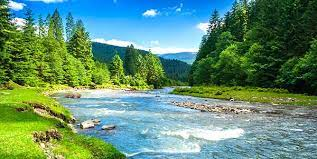

المناخ
ما هو تغير المناخ؟
يقصد بتغير المناخ التحولات طويلة الأجل في درجات الحرارة وأنماط الطقس. قد تكون هذه التحولات طبيعية فتحدث، على سبيل المثال، من خلال التغيرات في الدورة الشمسية. ولكن، منذ القرن التاسع عشر، أصبحت الأنشطة البشرية المسبب الرئيسي لتغير المناخ، ويرجع ذلك أساسًا إلى حرق الوقود الأحفوري، مثل الفحم والنفط والغاز.
.ينتج عن حرق الوقود الأحفوري انبعاثات غازات الدفيئة التي تعمل مثل غطاء يلتف حول الكرة الأرضية، مما يؤدي إلى حبس حرارة الشمس ورفع درجات الحرارة.

الطاقة المتجددة
ما هي الطاقة المتجددة؟
الطاقة المتجددة هي طاقة ناتجة عن مصادر طبيعيةتتجدد بمعدل يفوق ما يتم استهلاكه. أشعة الشمس والرياح، على سبيل المثال، من المصادر التي تتجدد باستمرار. وإن مصادر الطاقة المتجددة وفيرة وموجودة في كل مكان حولنا.
بالمقابل، الوقود الأحفوري (الفحم والنفط والغاز) من الموارد غير المتجددة التي يستغرق تشكيلها مئات الملايين من السنين. ويتسبب الوقود الأحفوري، عند حرقه لإنتاج الطاقة، في انبعاثات ضارة من غازات الدفيئة، مثل ثاني أكسيد الكربون.
أما الانبعاثات الناجمة عن توليد الطاقة المتجددة، فهي أقل بكثير من تلك الناجمة عن حرق الوقود الأحفوري. ولهذا يعد التحول من الوقود الأحفوري، الذي يمثل حاليًا حصة الأسد من الانبعاثات، إلى الطاقة المتجددة أمرًا أساسيًا لمعالجة أزمة المناخ.
الطاقة المتجددة حاليا أقل تكلفة في معظم البلدان، وهي تخلق وظائف أكثر بثلاث مرات من الوقود الأحفوري

القمامة

إنشاء مجتمع جديد من خلال التثقيف البيئي


الطبيعة بسيطة الفن الثقيل